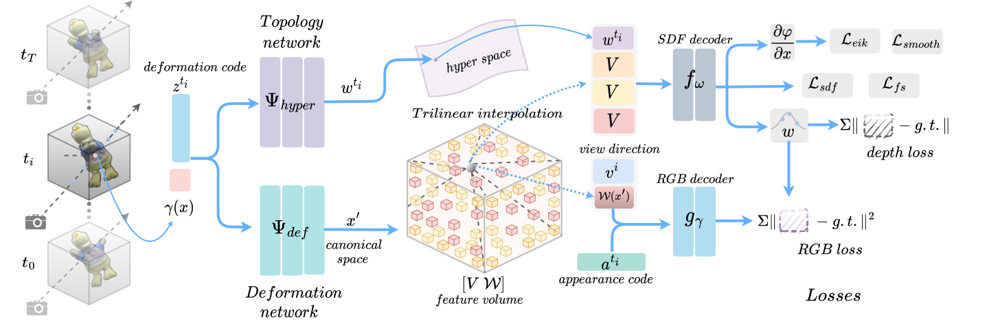
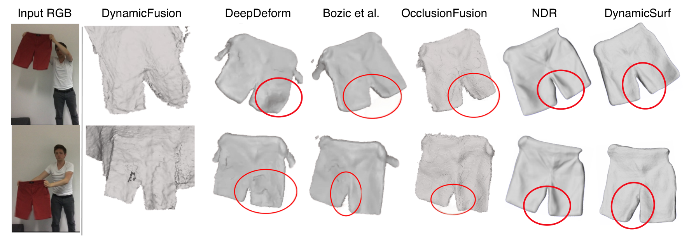
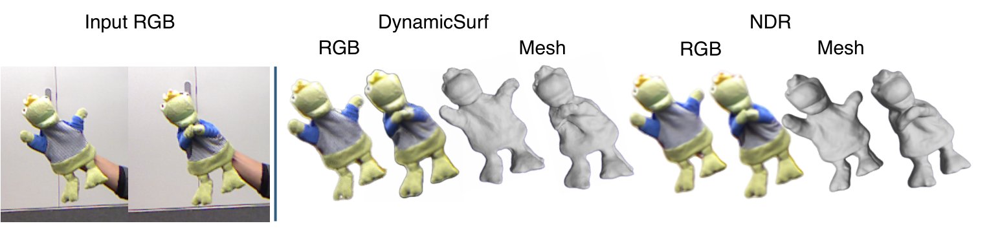
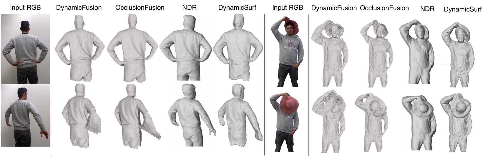
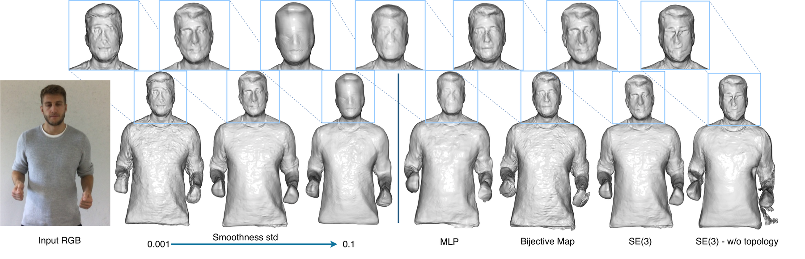

We propose DynamicSurf, a model-free neural implicit surface reconstruction method for high-fidelity 3D modelling of non-rigid surfaces from monocular RGB-D video. To cope with the lack of multi-view cues in monocular sequences of deforming surfaces, one of the most challenging settings for 3D reconstruction, DynamicSurf exploits depth, surface normals, and RGB losses to improve reconstruction fidelity and optimisation time. DynamicSurf learns a neural deformation field that maps a canonical representation of the surface geometry to the current frame. We depart from current neural non-rigid surface reconstruction models by designing the canonical representation as a learned feature grid which leads to faster and more accurate surface reconstruction than competing approaches that use a single MLP. We demonstrate DynamicSurf on public datasets and show that it can optimize sequences of varying frames with 6× speedup over pure MLP-based approaches while achieving comparable results to the state-of-the-art methods.
Given a monocular sequence of RGB-D frames and segmentation masks, DynamicSurf learns a deformation network that maps observed points to a shared canonical space, and a topology-aware network that additionally maps them into a learned hyper-space to handle topological changes that a deformation field alone cannot capture (e.g. self-contact, clothing folds). The deformation is parametrised as an SE(3) field — a rotation about a predicted anchor point plus a displacement — conditioned on a learnable per-frame deformation code, rather than a simple displacement field, which we found leads to overly smooth surfaces.
Unlike prior neural non-rigid reconstruction methods, which represent the canonical geometry purely with an MLP, DynamicSurf encodes it in a dense, optimizable feature grid, trilinearly interpolated and decoded into signed-distance and colour values by shared, shallow MLPs. To keep grid-based optimisation stable, the grid resolution is grown coarse-to-fine during training (35³ to 140³). Training supervises the SDF and rendered RGB-D directly against the input video with photometric, depth, free-space, Eikonal and surface-smoothness losses — with no reliance on 2D correspondence annotations, estimated normal maps, or optical flow as structural priors.

Overall architecture of DynamicSurf. Given a monocular sequence of RGB-D frames and segmentation masks, we learn a deformation network to map points to canonical space and a topology network to model topological changes. Points in canonical space are then queried via trilinear interpolation with our feature grid. These features and the hyper-space features (output of the topology network) are concatenated and decoded with shallow MLPs to predict signed distance values (SDF) of the surface and RGB colors.

Comparison against NDR, OcclusionFusion, Bozic et al., DeepDeform and DynamicFusion on a short sequence from the DeepDeform dataset. DynamicSurf achieves comparable results to NDR and better results than all the other baselines.

Qualitative comparison with NDR. DynamicSurf is on par with NDR while enjoying a 6× speed gain.

Qualitative comparison with NDR, OcclusionFusion, and DynamicFusion on two sequences from the KillingFusion dataset. DynamicSurf achieves comparable results to the baselines while enjoying up to 6.7× speed gain.
Rendered reconstruction sequences comparing DynamicSurf against DynamicFusion, DeepDeform, Bozic et al., OcclusionFusion and NDR.
best second best third best
| Metric | Method | DeepDeform Human ↓ | KillingFusion Alex ↓ | KillingFusion Hat ↓ | KillingFusion Frog ↓ |
|---|---|---|---|---|---|
| Mean | |||||
| OcclusionFusion | – | 3.75 | 6.77 | 1.61 | |
| NDR | – | 4.24 | 4.93 | 1.34 | |
| NDR* | 3.89 | 5.69 | 3.24 | 2.26 | |
| DynamicSurf (ours) | 2.96 | 6.12 | 2.83 | 1.39 | |
| Median | |||||
| OcclusionFusion | – | 3.41 | 6.47 | 1.59 | |
| NDR | – | 4.11 | 4.66 | 1.33 | |
| NDR* | 3.8 | 4.69 | 3.26 | 2.25 | |
| DynamicSurf (ours) | 2.89 | 5.21 | 2.75 | 1.27 | |
Quantitative results on 4 sequences. Geometric error is the average per-point per-frame 3D error between the reconstructed shape and the point cloud backprojected from GT depth inside the mask (lower is better). NDR denotes results reported in their paper, while NDR* denotes results obtained by training on NDR's public code release and settings. The DeepDeform Human column has only two reported methods, so no third-best entry is coloured there.
By representing canonical geometry with an optimizable feature grid instead of relying solely on an MLP, DynamicSurf reaches comparable reconstruction quality to the state-of-the-art while training substantially faster.
| Method | KillingFusion Alex | KillingFusion Hat | KillingFusion Frog | DeepDeform Human | DeepDeform Dog |
|---|---|---|---|---|---|
| NDR | 1× | 1× | 1× | 1× | 1× |
| DynamicSurf (ours) | 5.8× | 6.7× | 6.2× | 5.1× | 5× |
Optimization time speedup relative to NDR, on 5 sequences. DynamicSurf achieves a (5–6.7)× speedup over NDR. We could not evaluate training speed against OcclusionFusion, as its code isn't publicly available and its authors did not respond to our emails.
Deformation network. We compare our SE(3)-based deformation network against a pure MLP-based displacement field and against NDR's Bijective map, keeping layer/neuron counts matched across all three. The SE(3) network yields better results than the MLP-based method, especially in capturing face details, while the Bijective map gives comparable reconstruction quality but suffers from surface artefacts — so we chose SE(3) for its lower computational complexity and smoother surfaces.
Topology network. Removing the topology-aware network (so decoders take input only from the feature grid, with feature dimensions increased to match for a fair comparison) reduces DynamicSurf's ability to capture fine surface detail, especially under difficult deformations.
Smoothness loss. Increasing the standard deviation of the surface-smoothness loss trades off surface detail for smoothness — as the value increases, fine details on the surface start to disappear.

Ablation on smoothness loss and model architecture. Left: the effect of standard deviation δstd on surface smoothness. Right: the importance of the deformation and topology networks in recovering surface details and capturing motion.
@inproceedings{mohamed2024dynamicsurf,
title={DynamicSurf: Dynamic Neural RGB-D Surface Reconstruction with an Optimizable Feature Grid},
author={Mohamed, Mirgahney and Agapito, Lourdes},
booktitle={2024 International Conference on 3D Vision (3DV)},
year={2024},
organization={IEEE}
}We referred to the project page of Nerfies when creating this project page.